Last updated: 2025-06-25
Checks: 6 1
Knit directory: Getting_started/
This reproducible R Markdown analysis was created with workflowr (version 1.7.1). The Checks tab describes the reproducibility checks that were applied when the results were created. The Past versions tab lists the development history.
Great! Since the R Markdown file has been committed to the Git repository, you know the exact version of the code that produced these results.
Great job! The global environment was empty. Objects defined in the global environment can affect the analysis in your R Markdown file in unknown ways. For reproduciblity it’s best to always run the code in an empty environment.
The command set.seed(20240712) was run prior to running the code in the R Markdown file. Setting a seed ensures that any results that rely on randomness, e.g. subsampling or permutations, are reproducible.
Great job! Recording the operating system, R version, and package versions is critical for reproducibility.
Nice! There were no cached chunks for this analysis, so you can be confident that you successfully produced the results during this run.
Using absolute paths to the files within your workflowr project makes it difficult for you and others to run your code on a different machine. Change the absolute path(s) below to the suggested relative path(s) to make your code more reproducible.
| absolute | relative |
|---|---|
| /project/xuanyao/jiaming/Getting_started | . |
| /project/xuanyao/jiaming/Getting_started/data/Morris/program_data_nature_cNMF/gene_module_index_matrix.rds | data/Morris/program_data_nature_cNMF/gene_module_index_matrix.rds |
| /project/xuanyao/jiaming/Getting_started/data/Morris_adjusted/program_data/grna_target_data_frame_omit.rds | data/Morris_adjusted/program_data/grna_target_data_frame_omit.rds |
| /project/xuanyao/jiaming/Getting_started/data/Morris_adjusted/program_data/discovery_pairs_cis.rds | data/Morris_adjusted/program_data/discovery_pairs_cis.rds |
| /project/xuanyao/jiaming/Getting_started/output/Morris/remove_cis_match_grna/4_cov_high_expressed_gene/cNMF_10000_wilcox_no_approx_sceptre_perturbation_gene_remove_strong_official_应该没啥问题了/resample_normal_test_statistics.csv | output/Morris/remove_cis_match_grna/4_cov_high_expressed_gene/cNMF_10000_wilcox_no_approx_sceptre_perturbation_gene_remove_strong_official_应该没啥问题了/resample_normal_test_statistics.csv |
| /project/xuanyao/jiaming/Getting_started/output/Morris/sceptre_all_pairs/author_threshold_updated/results_run_discovery_analysis.rds | output/Morris/sceptre_all_pairs/author_threshold_updated/results_run_discovery_analysis.rds |
| /project/xuanyao/jiaming/Getting_started/data/Morris_adjusted/program_data_nature_cNMF/perturbation_gene_strong_qc.rds | data/Morris_adjusted/program_data_nature_cNMF/perturbation_gene_strong_qc.rds |
| /project/xuanyao/jiaming/Getting_started/output/Morris/sceptre_all_pairs/author_threshold_updated/results_run_calibration_check.rds | output/Morris/sceptre_all_pairs/author_threshold_updated/results_run_calibration_check.rds |
| /project/xuanyao/jiaming/Getting_started/output/Morris/remove_cis_match_grna/4_cov_high_expressed_gene/cNMF_10000_wilcox_no_approx_sceptre_perturbation_gene_remove_with_bug/resample_normal_test_statistics.csv | output/Morris/remove_cis_match_grna/4_cov_high_expressed_gene/cNMF_10000_wilcox_no_approx_sceptre_perturbation_gene_remove_with_bug/resample_normal_test_statistics.csv |
| /project/xuanyao/jiaming/Getting_started/output/Morris/remove_cis_match_grna/4_cov/cNMF_3000_skew_t_approximation/resample_normal_test_statistics.csv | output/Morris/remove_cis_match_grna/4_cov/cNMF_3000_skew_t_approximation/resample_normal_test_statistics.csv |
| /project/xuanyao/jiaming/Getting_started/output/Morris/remove_cis_match_grna/4_cov_high_expressed_gene/cNMF_3000_wilcox_normal_approx_perturbation_gene_remove_strong_qc/resample_normal_test_statistics.csv | output/Morris/remove_cis_match_grna/4_cov_high_expressed_gene/cNMF_3000_wilcox_normal_approx_perturbation_gene_remove_strong_qc/resample_normal_test_statistics.csv |
| /project/xuanyao/jiaming/Getting_started/output/Morris/remove_cis_match_grna/4_cov_high_expressed_gene/cNMF_10000_wilcox_no_approx_sceptre_perturbation_gene_remove_/resample_normal_test_statistics.csv | output/Morris/remove_cis_match_grna/4_cov_high_expressed_gene/cNMF_10000_wilcox_no_approx_sceptre_perturbation_gene_remove_/resample_normal_test_statistics.csv |
| /project/xuanyao/jiaming/Getting_started/data/Morris/program_data_NMF_set_300_50/gene_module_index_matrix.rds | data/Morris/program_data_NMF_set_300_50/gene_module_index_matrix.rds |
| /project/xuanyao/jiaming/Getting_started/output/Morris/remove_cis_match_grna/4_cov_high_expressed_gene/our_NMF_10000_wilcox_no_approx_sceptre_perturbation_gene_remove_strong_qc/resample_normal_test_statistics.csv | output/Morris/remove_cis_match_grna/4_cov_high_expressed_gene/our_NMF_10000_wilcox_no_approx_sceptre_perturbation_gene_remove_strong_qc/resample_normal_test_statistics.csv |
| /project/xuanyao/jiaming/Getting_started/output/Morris/remove_cis_match_grna/4_cov_high_expressed_gene/our_NMF_3000_wilcox_normal_approx_sceptre_perturbation_gene_remove_strong_qc/resample_normal_test_statistics.csv | output/Morris/remove_cis_match_grna/4_cov_high_expressed_gene/our_NMF_3000_wilcox_normal_approx_sceptre_perturbation_gene_remove_strong_qc/resample_normal_test_statistics.csv |
| /project/xuanyao/jiaming/Getting_started/output/Morris/remove_cis_match_grna/4_cov_high_expressed_gene/NTC_complete_set/Strong_qc_FAKE_NON_OVERLAP_set_70genes_per_set_3000_normal_wilcox/resample_normal_test_statistics.csv | output/Morris/remove_cis_match_grna/4_cov_high_expressed_gene/NTC_complete_set/Strong_qc_FAKE_NON_OVERLAP_set_70genes_per_set_3000_normal_wilcox/resample_normal_test_statistics.csv |
| /project/xuanyao/jiaming/Getting_started/output/Morris/remove_cis_match_grna/4_cov_high_expressed_gene/NTC_complete_set/Strong_qc_FAKE_NON_OVERLAP_set_70genes_per_set_10000_no_wilcox/resample_normal_test_statistics.csv | output/Morris/remove_cis_match_grna/4_cov_high_expressed_gene/NTC_complete_set/Strong_qc_FAKE_NON_OVERLAP_set_70genes_per_set_10000_no_wilcox/resample_normal_test_statistics.csv |
| /project/xuanyao/jiaming/Getting_started/output/Morris/remove_cis_match_grna/4_cov_high_expressed_gene/NTC_complete_set/NONOVERLAP_FAKE_set_70genes_per_set_3000_normal_wilcox/resample_normal_test_statistics.csv | output/Morris/remove_cis_match_grna/4_cov_high_expressed_gene/NTC_complete_set/NONOVERLAP_FAKE_set_70genes_per_set_3000_normal_wilcox/resample_normal_test_statistics.csv |
| /project/xuanyao/jiaming/Getting_started/output/Morris/remove_cis_match_grna/4_cov_high_expressed_gene/NTC_complete_set/NONOVERLAP_FAKE_set_70genes_per_set_10000_wilcox/resample_normal_test_statistics.csv | output/Morris/remove_cis_match_grna/4_cov_high_expressed_gene/NTC_complete_set/NONOVERLAP_FAKE_set_70genes_per_set_10000_wilcox/resample_normal_test_statistics.csv |
| /project/xuanyao/jiaming/Getting_started/data/Morris_adjusted/program_data/gene_module_index_matrix.rds | data/Morris_adjusted/program_data/gene_module_index_matrix.rds |
| /project/xuanyao/jiaming/Getting_started/output/Morris/remove_cis_match_grna/4_cov_high_expressed_gene/HALLMARK_10000_wilcox_no_approx_perturbation_gene_remove_strong_official/resample_normal_test_statistics.csv | output/Morris/remove_cis_match_grna/4_cov_high_expressed_gene/HALLMARK_10000_wilcox_no_approx_perturbation_gene_remove_strong_official/resample_normal_test_statistics.csv |
| /project/xuanyao/jiaming/Getting_started/data/Morris_adjusted/program_data_nature_cNMF/perturbation_gene_strong_qc_complete_gene.rds | data/Morris_adjusted/program_data_nature_cNMF/perturbation_gene_strong_qc_complete_gene.rds |
| /project/xuanyao/jiaming/Getting_started/output/Morris/debug/HALLMARK_10000_wilcox_no_approx_perturbation_gene_remove_strong_official/genewise_p_combined_all.rds | output/Morris/debug/HALLMARK_10000_wilcox_no_approx_perturbation_gene_remove_strong_official/genewise_p_combined_all.rds |
| /project/xuanyao/jiaming/Getting_started/output/Morris/remove_cis_match_grna/4_cov/HALLMARK_10000_no_approximation/resample_normal_test_statistics.csv | output/Morris/remove_cis_match_grna/4_cov/HALLMARK_10000_no_approximation/resample_normal_test_statistics.csv |
| /project/xuanyao/jiaming/Getting_started/output/Morris/remove_cis_match_grna/4_cov_high_expressed_gene/HALLMARK_3000_wilcox_normal_approx_perturbation_gene_remove_strong_qc/resample_normal_test_statistics.csv | output/Morris/remove_cis_match_grna/4_cov_high_expressed_gene/HALLMARK_3000_wilcox_normal_approx_perturbation_gene_remove_strong_qc/resample_normal_test_statistics.csv |
| /project/xuanyao/jiaming/Getting_started/output/Morris/debug/HALLMARK_genewise_3000_wilcox_genewise_normal_approx_perturbation_gene_remove_strong_qc_rep/genewise_p_combined_all.rds | output/Morris/debug/HALLMARK_genewise_3000_wilcox_genewise_normal_approx_perturbation_gene_remove_strong_qc_rep/genewise_p_combined_all.rds |
| /project/xuanyao/jiaming/Getting_started/output/Morris/debug/HALLMARK_100000_wilcox_no_approx_perturbation_gene_remove_strong_qc_v/genewise_p_combined_all_complete.rds | output/Morris/debug/HALLMARK_100000_wilcox_no_approx_perturbation_gene_remove_strong_qc_v/genewise_p_combined_all_complete.rds |
| /project/xuanyao/jiaming/Getting_started/output/Morris/debug/HALLMARK_100000_wilcox_no_approx_perturbation_gene_remove_strong_qc_v/genewise_p_combined_all.rds | output/Morris/debug/HALLMARK_100000_wilcox_no_approx_perturbation_gene_remove_strong_qc_v/genewise_p_combined_all.rds |
| /project/xuanyao/jiaming/Getting_started/output/Morris/debug/HALLMARK_100000_wilcox_no_approx_perturbation_gene_remove_strong_qc_v/genewise_p_combined_complement.rds | output/Morris/debug/HALLMARK_100000_wilcox_no_approx_perturbation_gene_remove_strong_qc_v/genewise_p_combined_complement.rds |
| /project/xuanyao/jiaming/Getting_started/output/Morris/remove_cis_match_grna/4_cov_high_expressed_gene/HALLMARK_100000_wilcox_no_approx_perturbation_gene_remove_strong_qc_v/resample_normal_test_statistics.csv | output/Morris/remove_cis_match_grna/4_cov_high_expressed_gene/HALLMARK_100000_wilcox_no_approx_perturbation_gene_remove_strong_qc_v/resample_normal_test_statistics.csv |
| /project/xuanyao/jiaming/Getting_started/output/Morris/remove_cis_match_grna/4_cov_high_expressed_gene/HALLMARK_3000_wilcox_t_approx_perturbation_gene_remove_strong_qc/resample_normal_test_statistics.csv | output/Morris/remove_cis_match_grna/4_cov_high_expressed_gene/HALLMARK_3000_wilcox_t_approx_perturbation_gene_remove_strong_qc/resample_normal_test_statistics.csv |
| /project/xuanyao/jiaming/Getting_started/output/Morris/remove_cis_match_grna/no_qc/HALLMARK_100000_wilcox_no_approx_perturbation_gene_no_perturbation_qc/resample_normal_test_statistics.csv | output/Morris/remove_cis_match_grna/no_qc/HALLMARK_100000_wilcox_no_approx_perturbation_gene_no_perturbation_qc/resample_normal_test_statistics.csv |
| /project/xuanyao/jiaming/Getting_started/output/Morris/remove_cis_match_grna/no_qc/HALLMARK_100000_wilcox_no_approx_perturbation_gene_no_perturbation_qc_p2/resample_normal_test_statistics.csv | output/Morris/remove_cis_match_grna/no_qc/HALLMARK_100000_wilcox_no_approx_perturbation_gene_no_perturbation_qc_p2/resample_normal_test_statistics.csv |
| /project/xuanyao/jiaming/Getting_started/output/Morris/debug/HALLMARK_3000_wilcox_normal_approx_perturbation_gene_no_perturbation_qc_/genewise_p_combined_all.rds | output/Morris/debug/HALLMARK_3000_wilcox_normal_approx_perturbation_gene_no_perturbation_qc_/genewise_p_combined_all.rds |
| /project/xuanyao/jiaming/Getting_started/output/Morris/debug/HALLMARK_100000_wilcox_no_approx_perturbation_gene_no_perturbation_qc/genewise_p_combined_all.rds | output/Morris/debug/HALLMARK_100000_wilcox_no_approx_perturbation_gene_no_perturbation_qc/genewise_p_combined_all.rds |
| /project/xuanyao/jiaming/Getting_started/output/Morris/debug/HALLMARK_100000_wilcox_no_approx_perturbation_gene_no_perturbation_qc_p2/genewise_p_combined_all.rds | output/Morris/debug/HALLMARK_100000_wilcox_no_approx_perturbation_gene_no_perturbation_qc_p2/genewise_p_combined_all.rds |
| /project/xuanyao/jiaming/Getting_started/output/simulation/our_acat_comparison | output/simulation/our_acat_comparison |
| /project/xuanyao/jiaming/Getting_started/output/simulation/our_acat_comparison_p2 | output/simulation/our_acat_comparison_p2 |
Great! You are using Git for version control. Tracking code development and connecting the code version to the results is critical for reproducibility.
The results in this page were generated with repository version 650eb7a. See the Past versions tab to see a history of the changes made to the R Markdown and HTML files.
Note that you need to be careful to ensure that all relevant files for the analysis have been committed to Git prior to generating the results (you can use wflow_publish or wflow_git_commit). workflowr only checks the R Markdown file, but you know if there are other scripts or data files that it depends on. Below is the status of the Git repository when the results were generated:
Ignored files:
Ignored: .Rhistory
Ignored: .Rproj.user/
Ignored: analysis/run.sh
Ignored: analysis/run_R.sh
Untracked files:
Untracked: .snakemake/
Untracked: Snakefile
Untracked: analysis/research_log_June_副本.Rmd
Untracked: analysis/sceptre_singleton.R
Untracked: analysis/sceptre_singleton.Rmd
Untracked: analysis/sceptre_threshold.Rmd
Untracked: cluster_config.json
Untracked: code/crt_sample.cpp
Untracked: code/debug.Rmd
Untracked: code/discovery.pdf
Untracked: code/draft.Rmd
Untracked: code/find_gene_set.Rmd
Untracked: code/fit_skew_normal.cpp
Untracked: code/functions_optimized.R
Untracked: code/general_data_optimized.R
Untracked: code/minp.R
Untracked: code/nature_data_edit.Rmd
Untracked: code/negative_control.Rmd
Untracked: code/negative_control.pdf
Untracked: code/newest.R
Untracked: code/parallel/
Untracked: code/plots_generator.Rmd
Untracked: code/rcc_err/
Untracked: code/rcc_jobs/
Untracked: code/rcc_out/
Untracked: code/remove_cis.R
Untracked: code/remove_cis_optimize.R
Untracked: code/render_pdf.Rmd
Untracked: code/render_pdf_ntc.Rmd
Untracked: code/render_pdf_ntc.pdf
Untracked: code/run_R_caslake.sh
Untracked: code/sceptre/
Untracked: code/simulation.Rmd
Untracked: code/t_test.cpp
Untracked: code/test_gene_module.Rmd
Untracked: code/utilizer/
Untracked: config/
Untracked: data/
Untracked: logs/
Untracked: output/Morris/
Untracked: output/Xie/
Untracked: output/debug/
Untracked: output/nature/
Untracked: output/newest/
Untracked: output/simulation/
Untracked: output/snakemake/
Untracked: run_snakemake.sh
Untracked: scripts/
Untracked: snakemake_benchmarks/
Untracked: snakemake_profile/
Untracked: temp/
Unstaged changes:
Deleted: analysis/reseach_log_May.Rmd
Modified: analysis/research_log.Rmd
Modified: analysis/research_log_May.Rmd
Modified: code/run_R.sh
Note that any generated files, e.g. HTML, png, CSS, etc., are not included in this status report because it is ok for generated content to have uncommitted changes.
These are the previous versions of the repository in which changes were made to the R Markdown (analysis/research_log_June.Rmd) and HTML (docs/research_log_June.html) files. If you’ve configured a remote Git repository (see ?wflow_git_remote), click on the hyperlinks in the table below to view the files as they were in that past version.
| File | Version | Author | Date | Message |
|---|---|---|---|---|
| Rmd | 650eb7a | jliucx | 2025-06-25 | add BH |
| html | 6b540ab | jliucx | 2025-06-25 | Build site. |
| Rmd | 4601b18 | jliucx | 2025-06-25 | add BH |
| html | 6a47d63 | jliucx | 2025-06-25 | Build site. |
| Rmd | b45d0ef | jliucx | 2025-06-25 | upload second simulation |
| html | 2630c7a | jliucx | 2025-06-25 | Build site. |
| Rmd | 2354540 | jliucx | 2025-06-25 | upload second simulation |
| html | 279dd0a | jliucx | 2025-06-23 | Build site. |
| Rmd | a510e09 | jliucx | 2025-06-23 | add simulation result |
| html | ec21d2f | jliucx | 2025-06-23 | Build site. |
| Rmd | db8aa61 | jliucx | 2025-06-23 | add simulation result |
| html | caf8062 | jliucx | 2025-06-23 | Build site. |
| Rmd | 7d39212 | jliucx | 2025-06-23 | add simulation result |
| html | aa49a08 | jliucx | 2025-06-11 | Build site. |
| Rmd | 9d4c8a0 | jliucx | 2025-06-11 | add simulation |
| html | 37376e3 | jliucx | 2025-06-03 | Build site. |
| Rmd | 3503115 | jliucx | 2025-06-03 | update June |
p1<-gg_qqplot(as.vector(as.matrix(read.csv("/project/xuanyao/jiaming/Getting_started/output/Morris/remove_cis_match_grna/4_cov_high_expressed_gene/cNMF_10000_wilcox_no_approx_sceptre_perturbation_gene_remove_strong_official_应该没啥问题了/resample_normal_test_statistics.csv",row.names = 1)[189:198,])), title="current filter, 10000 no approximation")
p2<-gg_qqplot(as.vector(as.matrix(read.csv("/project/xuanyao/jiaming/Getting_started/output/Morris/remove_cis_match_grna/4_cov_high_expressed_gene/cNMF_3000_wilcox_normal_approx_perturbation_gene_remove_strong_qc/resample_normal_test_statistics.csv",row.names = 1)[189:198,])), title="current filter, 3000 normal approximation")
p3<-gg_qqplot(as.vector(as.matrix(read.csv("/project/xuanyao/jiaming/Getting_started/output/Morris/remove_cis_match_grna/4_cov_high_expressed_gene/cNMF_10000_wilcox_no_approx_sceptre_perturbation_gene_remove_with_bug/resample_normal_test_statistics.csv",row.names = 1)[189:198,])), title="No filter, 10000 no approximation")
ntc_pvals <- module_results_sceptre_NTC$acat_pval
p4<-gg_qqplot(ntc_pvals, title="NTC-ACAT")
grid.arrange(p3,p1,p2,p4,ncol=2)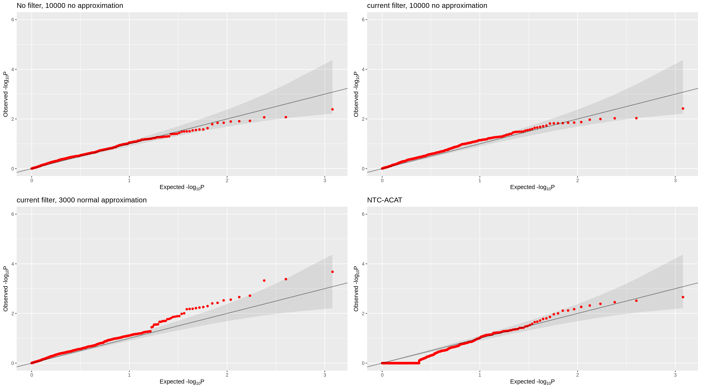
p1<-gg_qqplot(as.vector(as.matrix(read.csv("/project/xuanyao/jiaming/Getting_started/output/Morris/remove_cis_match_grna/4_cov_high_expressed_gene/our_NMF_10000_wilcox_no_approx_sceptre_perturbation_gene_remove_strong_qc/resample_normal_test_statistics.csv",row.names = 1)[189:198,])), title="current filter, 10000 no approximation")
p2<-gg_qqplot(as.vector(as.matrix(read.csv("/project/xuanyao/jiaming/Getting_started/output/Morris/remove_cis_match_grna/4_cov_high_expressed_gene/our_NMF_3000_wilcox_normal_approx_sceptre_perturbation_gene_remove_strong_qc/resample_normal_test_statistics.csv",row.names = 1)[189:198,])), title="current filter, 3000 normal approximation")
ntc_pvals <- module_results_sceptre_NTC$acat_pval
p4<-gg_qqplot(ntc_pvals, title="NTC-ACAT")
grid.arrange(p1,p2,p4,ncol=3)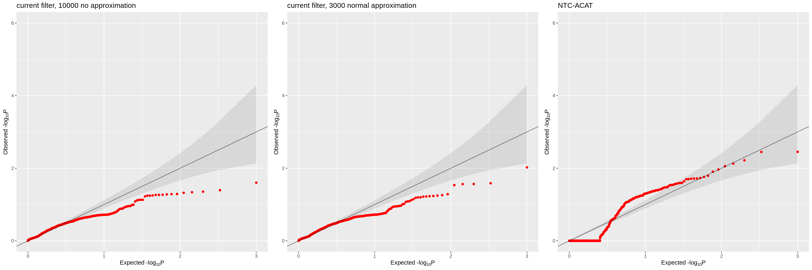
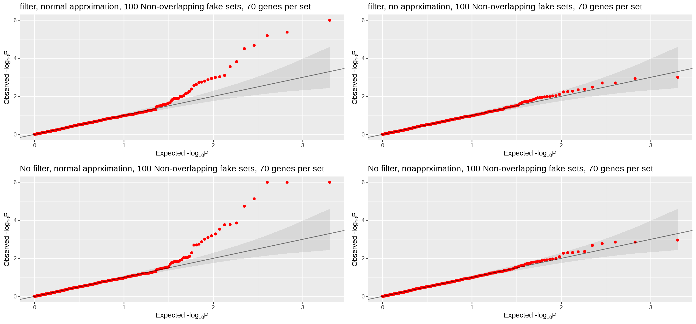
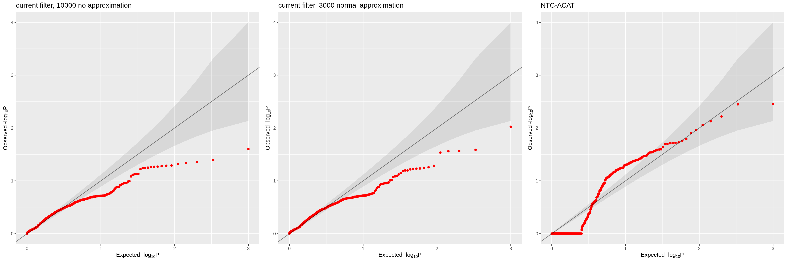
p1<-gg_qqplot(as.vector(as.matrix(read.csv("/project/xuanyao/jiaming/Getting_started/output/Morris/remove_cis_match_grna/4_cov_high_expressed_gene/cNMF_10000_wilcox_no_approx_sceptre_perturbation_gene_remove_strong_official_应该没啥问题了/resample_normal_test_statistics.csv",row.names = 1)[189:198,])), title="current filter, 10000 no approximation")
p2<-gg_qqplot(as.vector(as.matrix(read.csv("/project/xuanyao/jiaming/Getting_started/output/Morris/remove_cis_match_grna/4_cov_high_expressed_gene/cNMF_3000_wilcox_normal_approx_perturbation_gene_remove_strong_qc/resample_normal_test_statistics.csv",row.names = 1)[189:198,])), title="current filter, 3000 normal approximation")
p3<-gg_qqplot(as.vector(as.matrix(read.csv("/project/xuanyao/jiaming/Getting_started/output/Morris/remove_cis_match_grna/4_cov_high_expressed_gene/cNMF_10000_wilcox_no_approx_sceptre_perturbation_gene_remove_with_bug/resample_normal_test_statistics.csv",row.names = 1)[189:198,])), title="No filter, 10000 no approximation")
ntc_pvals <- module_results_sceptre_NTC$acat_pval
p4<-gg_qqplot(ntc_pvals, title="NTC-ACAT")
grid.arrange(p3,p1,p2,p4,ncol=2)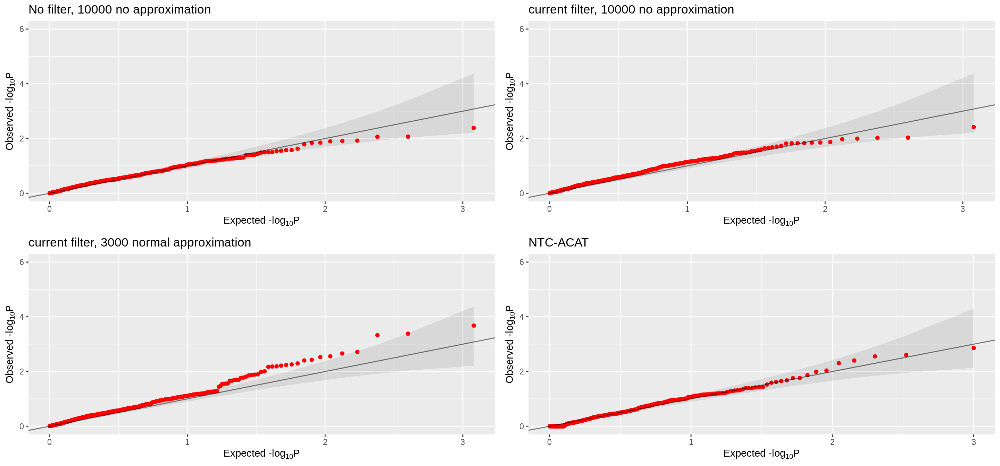
grid.arrange(p1000,p3,p2,pNTC_10000,pNTC_100000,pNTC_3000,pNTC_gene_10000,pNTC_gene_100000,pNTC_gene_3000, ncol = 3)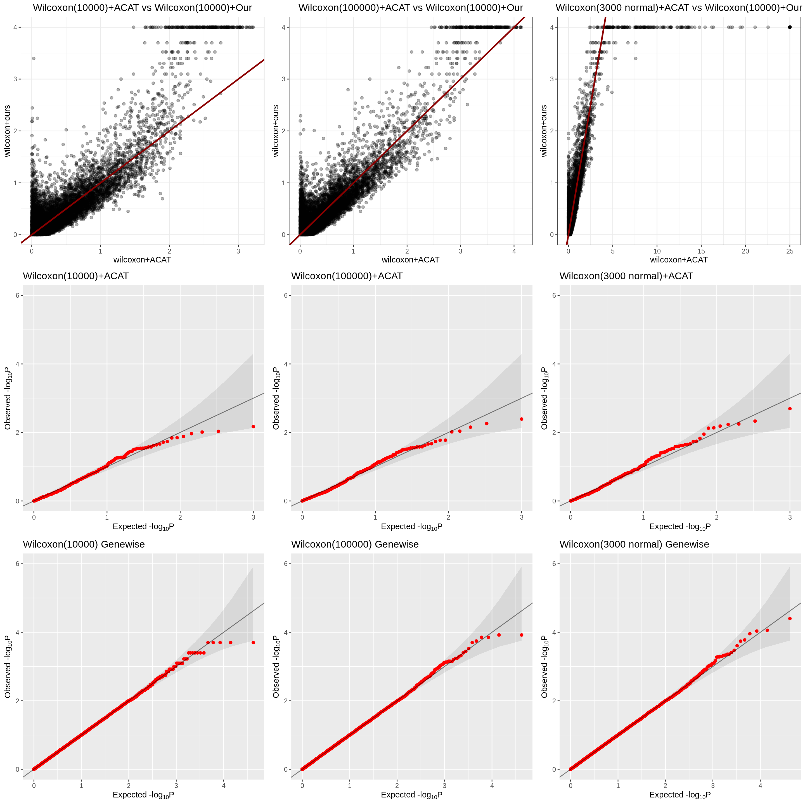
| Version | Author | Date |
|---|---|---|
| aa49a08 | jliucx | 2025-06-11 |
common_rows <- intersect(rownames(genewise_p_combined_all_3000),
rownames(genewise_p_combined_all_100000))
# 按相同顺序 subset
genewise_100000_sub <- genewise_p_combined_all_100000[common_rows, , drop = FALSE]
genewise_3000_sub <- genewise_p_combined_all_3000[common_rows, , drop = FALSE]
library(ggplot2)
# 创建 data frame
plot_df <- data.frame(
p_100000 = -log10(as.vector(as.matrix(genewise_100000_sub))),
p_3000 = -log10(as.vector(as.matrix(genewise_3000_sub)))
)
# 画图
pdiscovery<-ggplot(plot_df, aes(x = p_100000, y = p_3000)) +
geom_point(alpha = 0.3, size = 1.2) +
geom_abline(slope = 1, intercept = 0, color = "red", linetype = "dashed") +
labs(
x = "-log10 p (100000)",
y = "-log10 p (3000 normal)",
title = "Discovery Set Gene-wise comparison: 100000 vs 3000 normal "
) +
theme_bw() +
theme(plot.title = element_text(hjust = 0.5))common_rows <- intersect(rownames(genewise_p_combined_all_ntc_100000),
rownames(genewise_p_combined_all_ntc_3000))
# 按相同顺序 subset
ntc_100000_sub <- genewise_p_combined_all_ntc_100000[common_rows, , drop = FALSE]
ntc_3000_sub <- genewise_p_combined_all_ntc_3000[common_rows, , drop = FALSE]
plot_df_ntc <- data.frame(
p_100000 = -log10(as.vector(as.matrix(ntc_100000_sub))),
p_3000 = -log10(as.vector(as.matrix(ntc_3000_sub)))
)
pNTC<-ggplot(plot_df_ntc, aes(x = p_100000, y = p_3000)) +
geom_point(alpha = 0.3, size = 1.2) +
geom_abline(slope = 1, intercept = 0, color = "red", linetype = "dashed") +
labs(
x = "-log10 p (NTC 100000)",
y = "-log10 p (NTC 3000)",
title = "NTC gene-wise comparison: 100000 vs 3000 normal"
) +
theme_bw() +
theme(plot.title = element_text(hjust = 0.5))grid.arrange(pdiscovery,pNTC, ncol = 2)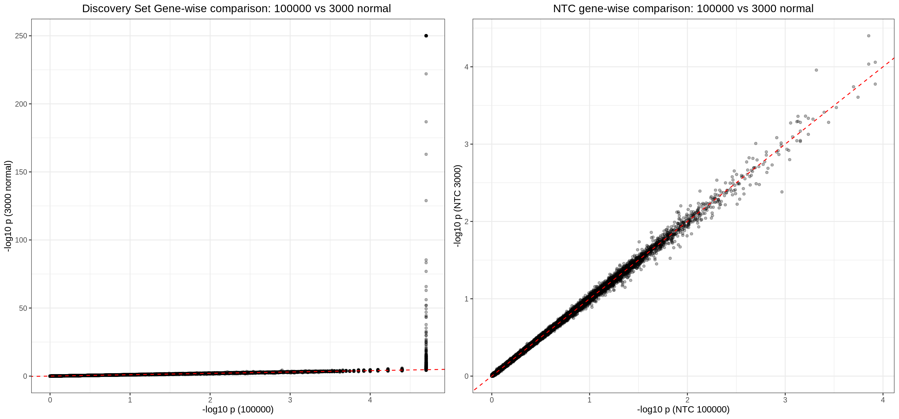
| Version | Author | Date |
|---|---|---|
| aa49a08 | jliucx | 2025-06-11 |
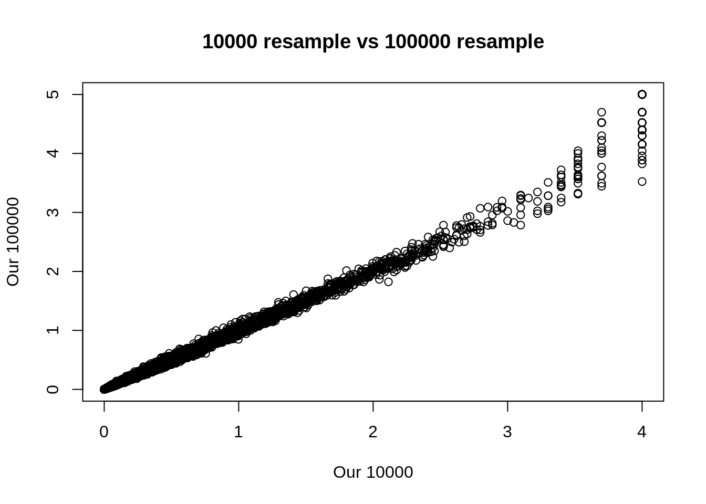
| Version | Author | Date |
|---|---|---|
| aa49a08 | jliucx | 2025-06-11 |
Attaching package: 'purrr'The following object is masked from 'package:data.table':
transpose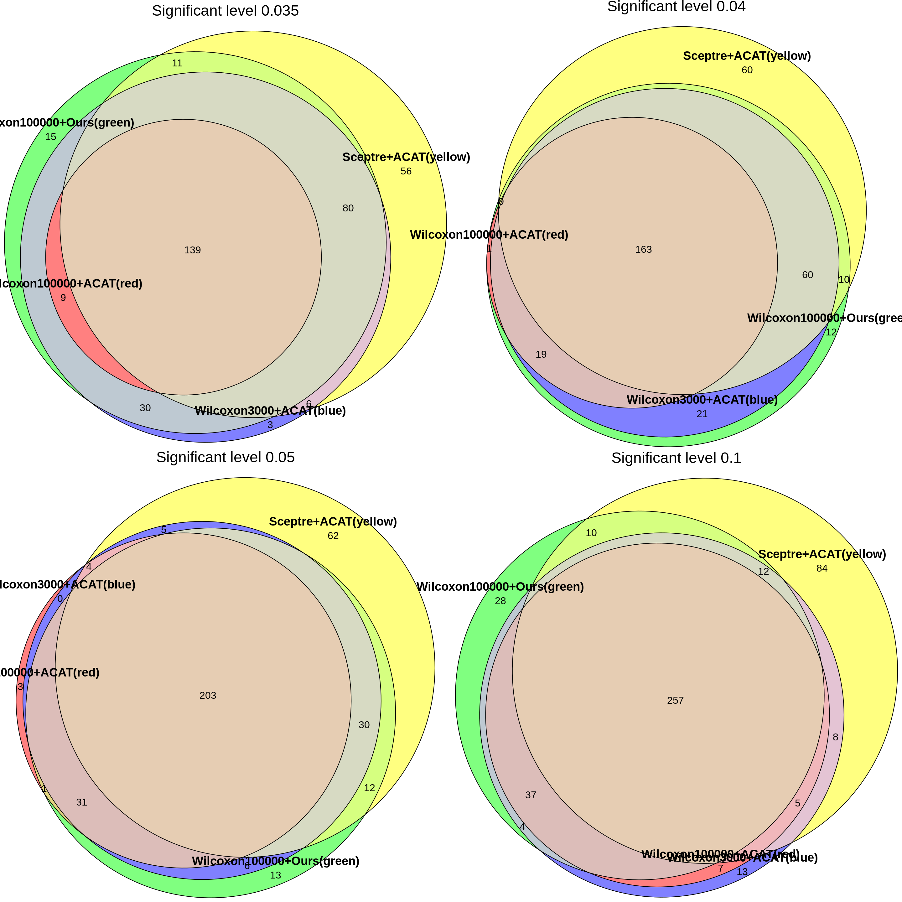
| Version | Author | Date |
|---|---|---|
| aa49a08 | jliucx | 2025-06-11 |
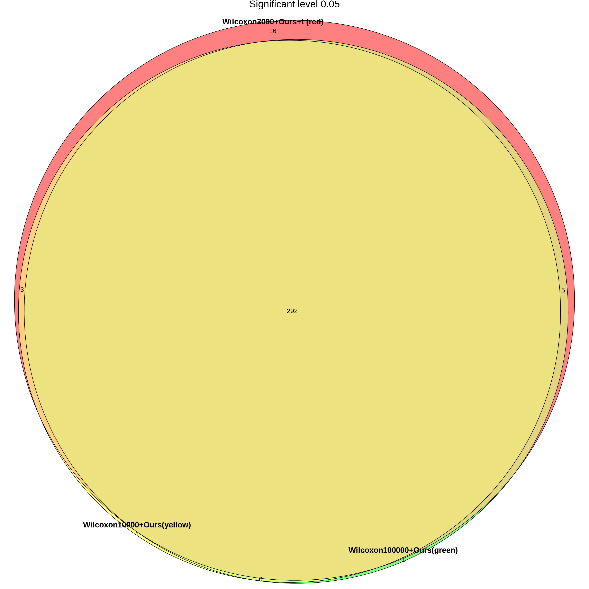
| Version | Author | Date |
|---|---|---|
| aa49a08 | jliucx | 2025-06-11 |
gg_qqplot(as.vector(as.matrix(read.csv("/project/xuanyao/jiaming/Getting_started/output/Morris/remove_cis_match_grna/4_cov_high_expressed_gene/HALLMARK_3000_wilcox_t_approx_perturbation_gene_remove_strong_qc/resample_normal_test_statistics.csv",row.names = 1)[189:198,])), title="Wilcoxon+Ours 3000 t approximation")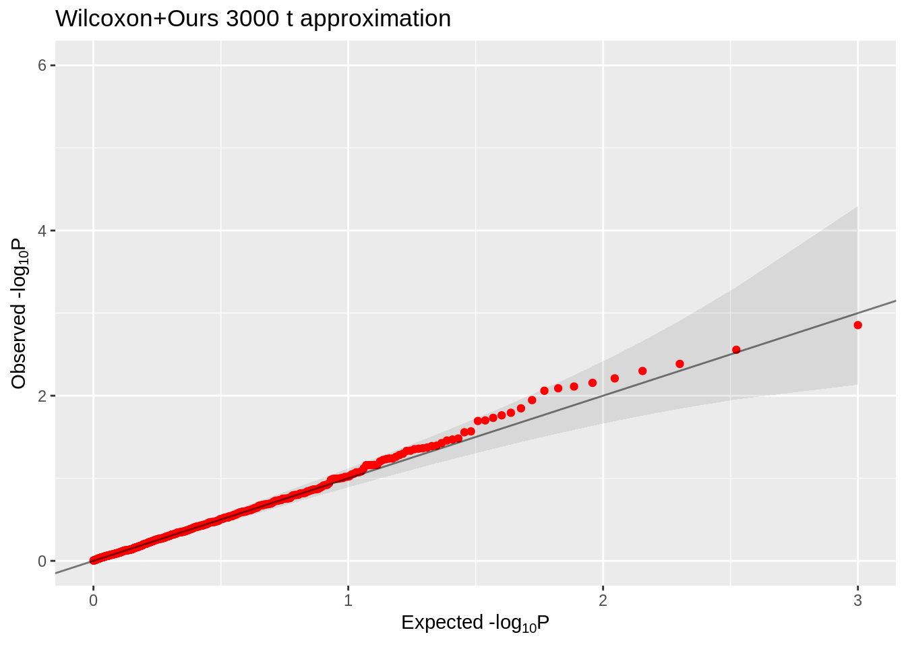
| Version | Author | Date |
|---|---|---|
| aa49a08 | jliucx | 2025-06-11 |
module_results_sceptre$bh_pval <- p.adjust(module_results_sceptre$acat_pval, method = "BH")
module_results_sceptre$identifier <- paste(module_results_sceptre$grna_id, module_results_sceptre$module, sep = "_")
module_results_t_3000$bh_pval <- p.adjust(module_results_t_3000$acat_pval, method = "BH")
module_results_t_3000$identifier <- paste(module_results_t_3000$grna_id, module_results_t_3000$module, sep = "_")
module_results_t_100000$bh_pval <- p.adjust(module_results_t_100000$acat_pval, method = "BH")
module_results_t_100000$identifier <- paste(module_results_t_100000$grna_id, module_results_t_100000$module, sep = "_")
max_stat_long_100000$bh_pval <- p.adjust(max_stat_long_100000$p_value, method = "BH")
max_stat_long_100000$identifier <- paste(max_stat_long_100000$grna_id, max_stat_long_100000$module, sep = "_")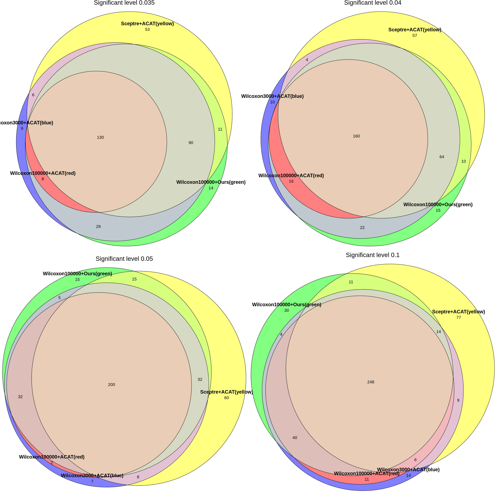
| Version | Author | Date |
|---|---|---|
| caf8062 | jliucx | 2025-06-23 |
# A tibble: 29 × 3
Percentage_Short Effect_Strength n
<chr> <chr> <int>
1 0% 0.055 402
2 100% 0.04 816
3 100% 0.045 492
4 100% 0.05 912
5 100% 0.055 912
6 100% 0.06 912
7 100% 0.065 904
8 100% 0.07 906
9 30% 0.04 890
10 30% 0.045 894
11 30% 0.05 888
12 30% 0.055 242
13 30% 0.06 896
14 30% 0.065 892
15 30% 0.07 742
16 50% 0.04 904
17 50% 0.045 844
18 50% 0.05 622
19 50% 0.055 808
20 50% 0.06 760
21 50% 0.065 924
22 50% 0.07 1180
23 80% 0.04 756
24 80% 0.045 1002
25 80% 0.05 626
26 80% 0.055 814
27 80% 0.06 396
28 80% 0.065 808
29 80% 0.07 848Warning: 'timedatectl' indicates the non-existent timezone name 'n/a'unable to deduce timezone name from 'America/Chicago'── Attaching packages ─────────────────────────────────────── tidyverse 1.3.1 ──✔ forcats 0.5.1 ── Conflicts ────────────────────────────────────────── tidyverse_conflicts() ──
✖ data.table::between() masks dplyr::between()
✖ gridExtra::combine() masks dplyr::combine()
✖ Matrix::expand() masks tidyr::expand()
✖ dplyr::filter() masks stats::filter()
✖ data.table::first() masks dplyr::first()
✖ dplyr::lag() masks stats::lag()
✖ data.table::last() masks dplyr::last()
✖ Matrix::pack() masks tidyr::pack()
✖ MASS::select() masks dplyr::select()
✖ purrr::transpose() masks data.table::transpose()
✖ Matrix::unpack() masks tidyr::unpack()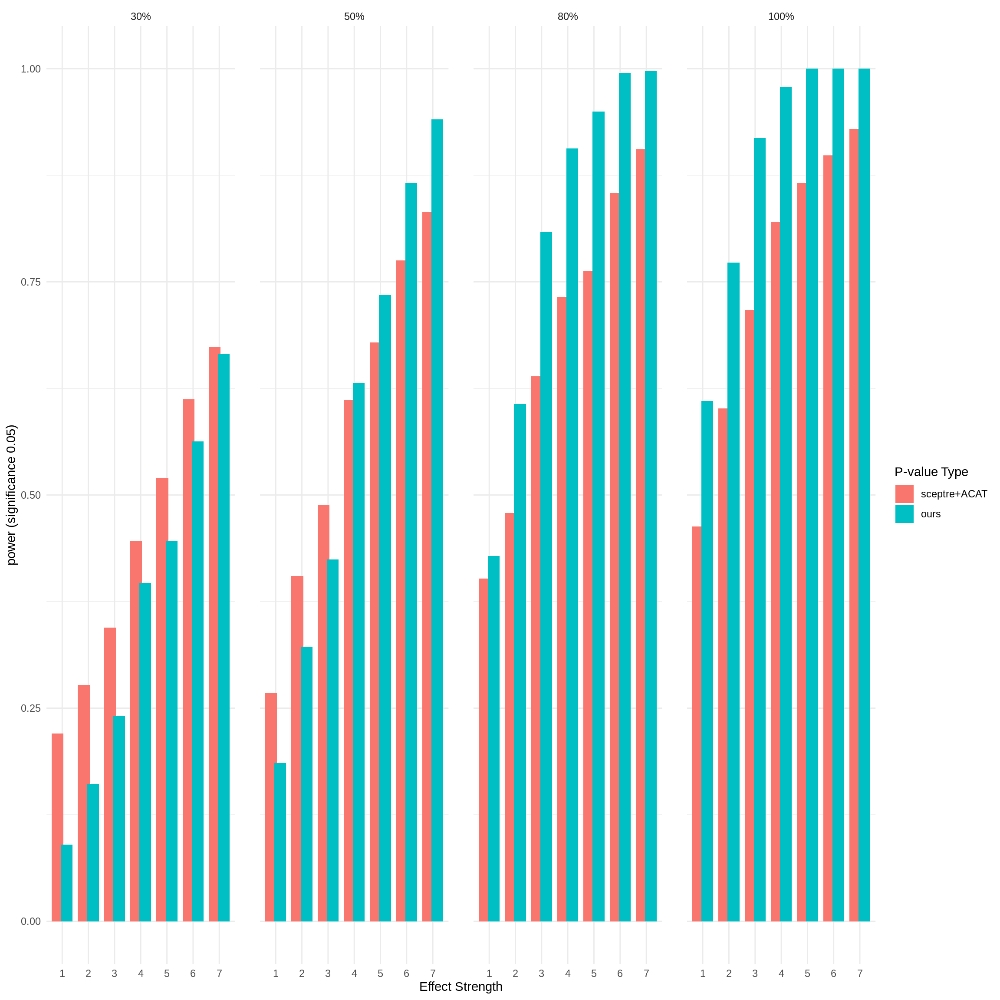
# A tibble: 35 × 3
Percentage_Short Effect_Strength n
<chr> <chr> <int>
1 0% 0.04 1802
2 0% 0.045 1366
3 0% 0.05 1362
4 0% 0.055 1364
5 0% 0.06 1364
6 0% 0.065 1364
7 0% 0.07 1368
8 100% 0.04 196
9 100% 0.045 146
10 100% 0.05 102
11 100% 0.055 160
12 100% 0.06 216
13 100% 0.065 302
14 100% 0.07 154
15 30% 0.04 248
16 30% 0.045 388
17 30% 0.05 168
18 30% 0.055 364
19 30% 0.06 430
20 30% 0.065 276
21 30% 0.07 294
22 50% 0.04 264
23 50% 0.045 364
24 50% 0.05 266
25 50% 0.055 328
26 50% 0.06 190
27 50% 0.065 276
28 50% 0.07 326
29 80% 0.04 348
30 80% 0.045 240
31 80% 0.05 406
32 80% 0.055 166
33 80% 0.06 130
34 80% 0.065 430
35 80% 0.07 420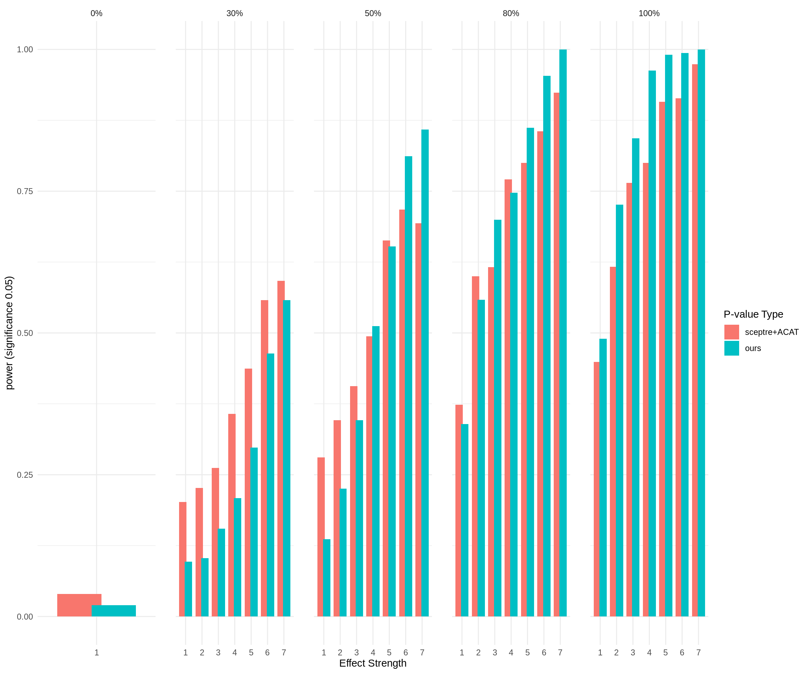
sessionInfo()R version 4.1.0 (2021-05-18)
Platform: x86_64-pc-linux-gnu (64-bit)
Running under: CentOS Linux 8
Matrix products: default
BLAS/LAPACK: /software/openblas-0.3.13-el8-x86_64/lib/libopenblas_skylakexp-r0.3.13.so
locale:
[1] LC_CTYPE=en_US.UTF-8 LC_NUMERIC=C
[3] LC_TIME=en_US.UTF-8 LC_COLLATE=en_US.UTF-8
[5] LC_MONETARY=en_US.UTF-8 LC_MESSAGES=en_US.UTF-8
[7] LC_PAPER=en_US.UTF-8 LC_NAME=C
[9] LC_ADDRESS=C LC_TELEPHONE=C
[11] LC_MEASUREMENT=en_US.UTF-8 LC_IDENTIFICATION=C
attached base packages:
[1] parallel stats graphics grDevices utils datasets methods
[8] base
other attached packages:
[1] forcats_0.5.1 tidyverse_1.3.1 stringr_1.5.1
[4] purrr_1.0.2 speedglm_0.3-5 biglm_0.9-3
[7] DBI_1.2.3 MASS_7.3-60 ACAT_0.91
[10] eulerr_7.0.2 gridExtra_2.3 heavytailcombtest_1.0.0
[13] sgt_2.0 numDeriv_2016.8-1.1 optimx_2024-12.2
[16] peakRAM_1.0.2 BH_1.84.0-0 Matrix_1.6-3
[19] sceptredata_0.99.0 sceptre_0.10.0 presto_1.0.0
[22] data.table_1.14.8 Rcpp_1.0.12 tidyr_1.3.0
[25] tibble_3.2.1 readr_1.4.0 dplyr_1.1.4
[28] ggplot2_3.5.1 workflowr_1.7.1
loaded via a namespace (and not attached):
[1] fs_1.6.3 lubridate_1.7.10 httr_1.4.2 rprojroot_2.0.4
[5] tools_4.1.0 backports_1.4.1 bslib_0.7.0 utf8_1.2.1
[9] R6_2.5.1 colorspace_2.1-0 withr_2.5.2 tidyselect_1.2.0
[13] processx_3.8.4 compiler_4.1.0 git2r_0.32.0 rvest_1.0.0
[17] cli_3.6.1 xml2_1.3.2 labeling_0.4.3 sass_0.4.9
[21] scales_1.3.0 mvtnorm_1.3-3 callr_3.7.6 digest_0.6.33
[25] rmarkdown_2.27 pkgconfig_2.0.3 htmltools_0.5.8.1 dbplyr_2.1.1
[29] fastmap_1.1.1 invgamma_1.1 highr_0.11 readxl_1.3.1
[33] rlang_1.1.2 rstudioapi_0.15.0 jquerylib_0.1.4 generics_0.1.3
[37] farver_2.1.1 jsonlite_1.8.7 magrittr_2.0.3 munsell_0.5.0
[41] fansi_1.0.5 lifecycle_1.0.4 stringi_1.6.2 whisker_0.4.1
[45] yaml_2.2.1 grid_4.1.0 promises_1.2.0.1 crayon_1.5.2
[49] lattice_0.22-5 haven_2.4.1 hms_1.1.0 polylabelr_0.3.0
[53] knitr_1.48 ps_1.7.5 pillar_1.9.0 rmutil_1.1.10
[57] reprex_2.0.0 glue_1.6.2 evaluate_0.23 getPass_0.2-2
[61] modelr_0.1.8 vctrs_0.6.4 nloptr_1.2.2.2 httpuv_1.6.1
[65] cellranger_1.1.0 gtable_0.3.0 polyclip_1.10-6 assertthat_0.2.1
[69] cachem_1.0.8 xfun_0.51 broom_0.7.8 pracma_2.4.4
[73] later_1.2.0 ellipsis_0.3.2